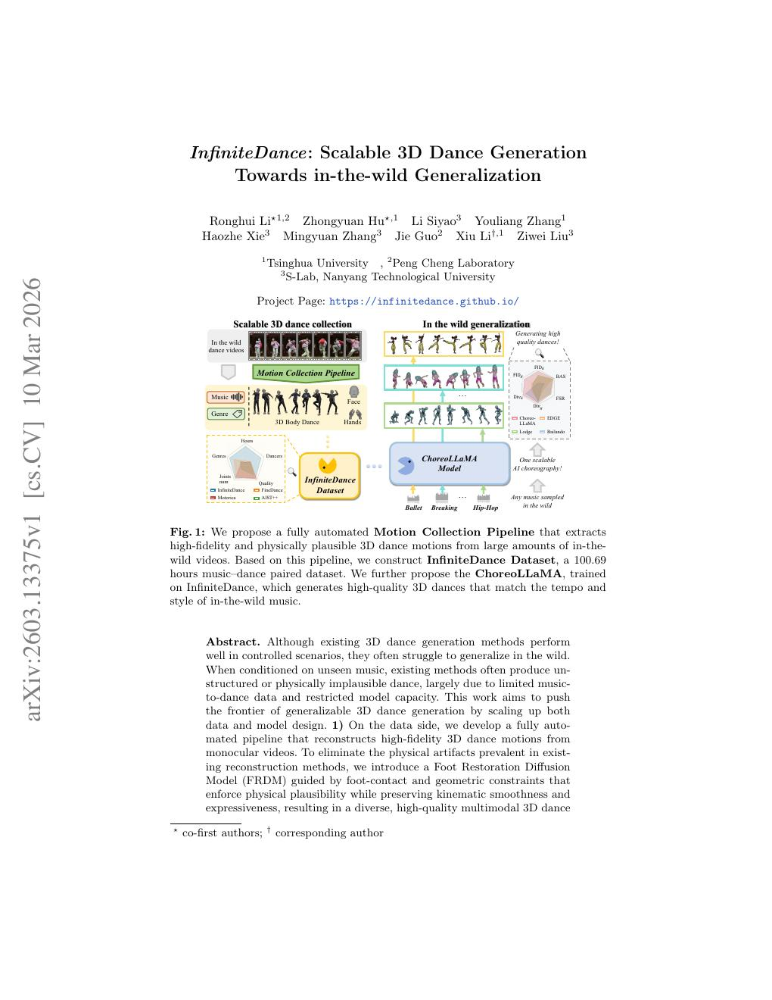
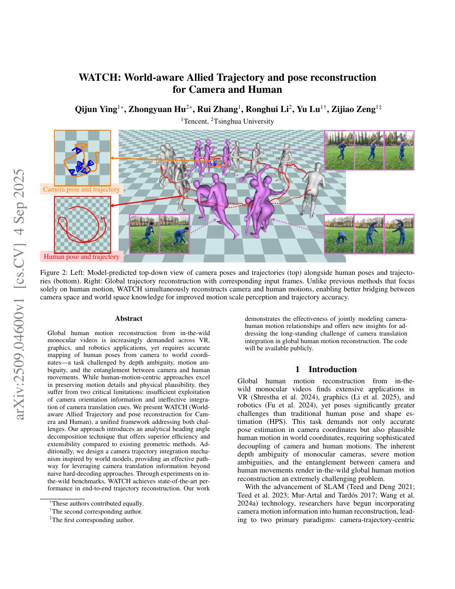
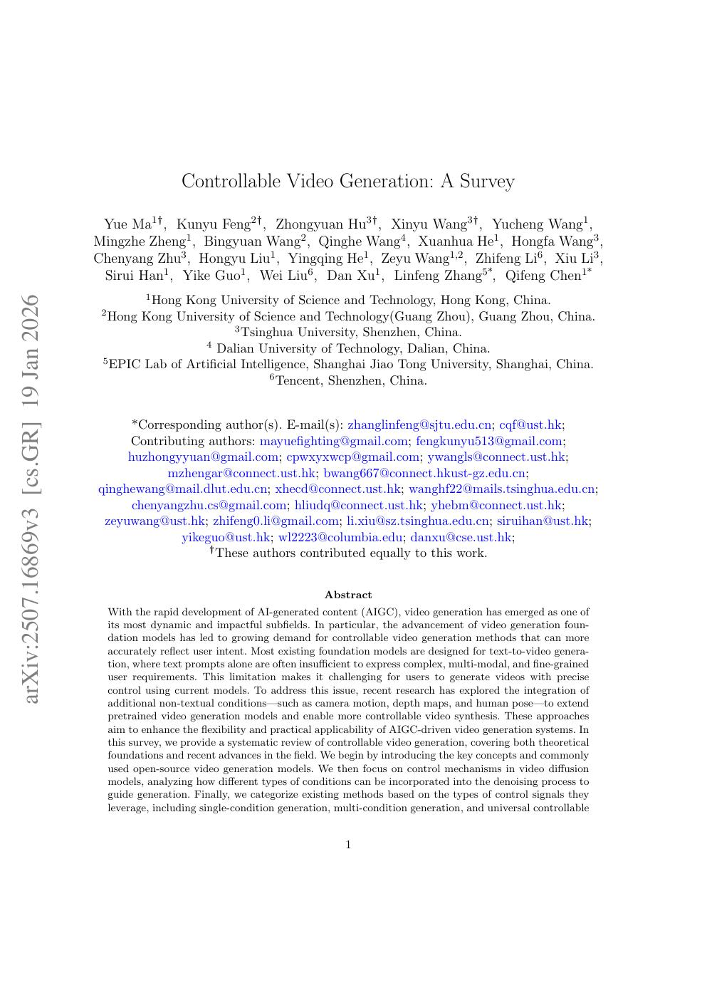
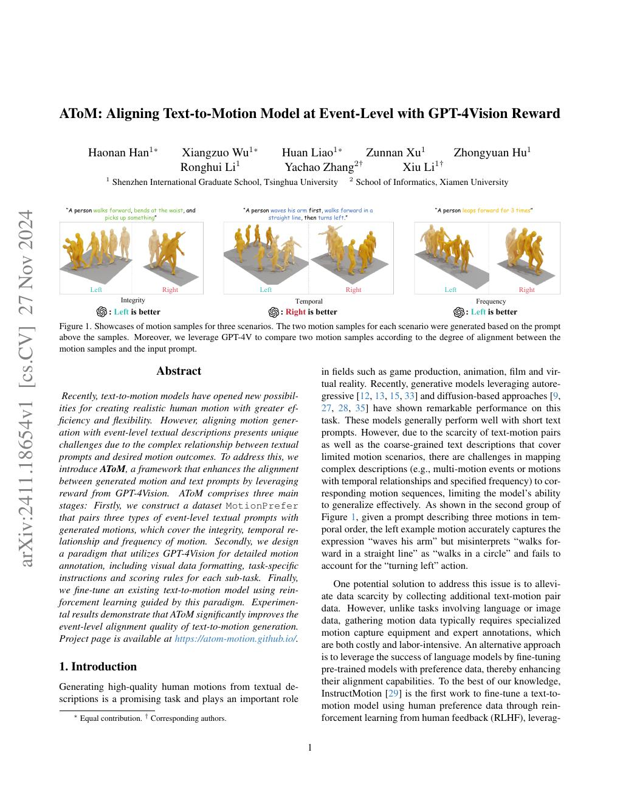

hzy (胡衷瑗)
First-year Ph.D. student, Tsinghua University
Advised by Prof. Xiu Li · Shenzhen International Graduate School

About Me
I am a first-year Ph.D. student at Tsinghua University, advised by Prof. Xiu Li. My research focuses on video generation, motion generation, and world models, with the long-term goal of building generative systems that can simulate dynamic visual worlds and human behavior.
Previously, I was a research intern at Tencent (Jun. 2025 – Dec. 2025). Feel free to reach out if you would like to discuss research or collaboration.
Publications
Underlined denotes me. * denotes equal contribution.

InfiniteDance: Scalable 3D Dance Generation Towards in-the-wild Generalization
PreprintarXiv, 2026

WATCH: World-aware Allied Trajectory and pose reconstruction for Camera and Human
PreprintarXiv, 2025


Atom: Aligning Text-to-Motion Model at Event-Level with GPT-4Vision Reward
CVPR 2025IEEE/CVF Conference on Computer Vision and Pattern Recognition
Experience
Research Interests
- Video Generation
- Motion Generation
- World Models